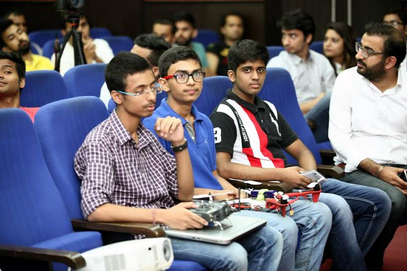
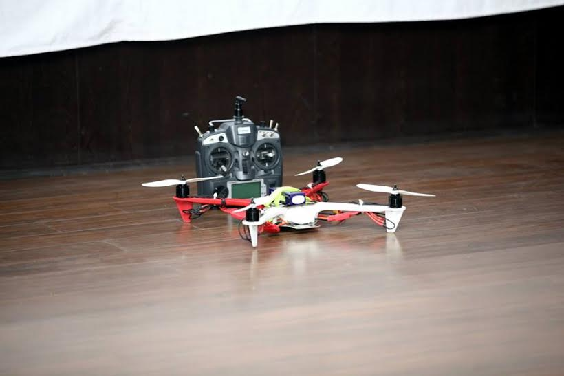
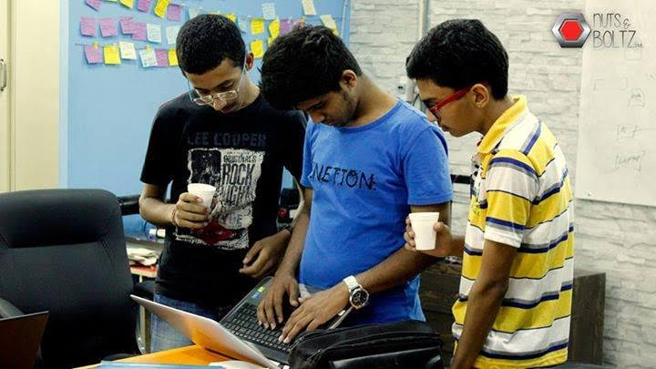
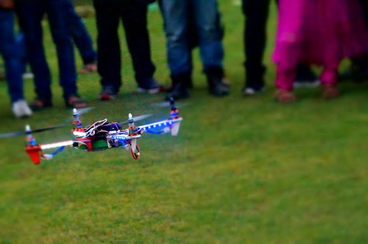

कहते हैं कि कुछ करने के लिए उम्र और तर्जुबे से ज्यादा जज्बे की जरूरत होती है। अगर आपके अंदर किसी काम को करने का जज्बा है तो आप कठिन से कठिन कार्य भी सफलतापूर्वक कर सकते हैं और दूसरों के लिए मिसाल बन सकते हैं। कुछ ऐसा ही किया संचित मिश्रा, त्रियम्बके जोशी और प्रणव कालरा ने। जिन्होंने काफी छोटी उम्र में ही एक ऐसा यंत्र बना डाला जोकि वैसे तो सुरक्षा हेतु प्रयोग में लाया जाता है और आम लोगों के बीच इसके प्रयोग पर बैन है लेकिन इन तीनों दोस्तों का दावा है कि उनका यह ड्रोन यंत्र पर्यावरण की दिशा में काफी उपयोगी सिद्ध हो सकता है। इसे बनाने का मकसद भी उनका यही है कि लोग जान सकें कि जिस वातावरण में वे सांस ले रहे हैं उसमें कौन सी गैस कितनी मात्रा में मौजूद है। उनका मानना है कि इस उपकरण के उपयोग से समाज में पर्यावरण के प्रति लोग सजग व जागरूक होंगे और पर्यावरण का सही संतुलन बनाने की दिशा में सही व प्रभावी प्रयास हो सकेंगे।

संचित और त्रियम्बके दोनों मात्र सोलह साल के हैं और इसी साल उन्होंने दसवीं पास की है। जबकि प्रणव मात्र पंद्रह साल के हैं और अभी दसवीं के छात्र हैं।
संचित बताते हैं कि वे और त्रियम्बके एक ही स्कूल में पढ़ते थे। जब वे नवीं कक्षा में थे उसी दौरान वे प्रतियोगिता के लिए किसी दूसरे स्कूल में गए। वहीं उनकी मुलाकात प्रणव से हुई और तीनों में अच्छी दोस्ती हो गई। तीनों को तकनीकी विषयों में काफी रुचि थी। तीनों ही जिंदगी में कुछ हटकर करना चाहते थे और अपनी पढ़ाई के साथ-साथ क्या नया किया जाए यह भी इनके दिमाग में चलता रहता था। इस दौरान संचित ड्रोन पर रिसर्च कर रहे थे। तभी प्रणव के दिमाग में यह आइडिया आया कि क्यों न एक ऐसा ड्रोन बनाया जाए जोकि पर्यावरण की दिशा में काम कर सके। फिर तीनों दोस्त इस ड्रोन को बनाने की तैयारी में जुट गए। इसी साल फरवरी में इन्होंने अपने इस प्रोजेक्ट पर काम करना शुरु किया और जुलाई २०१५ तक उनका यह ड्रोन बनकर तैयार हो गया। लेकिन अभी भी यह तीनों इसे अपग्रेड करने की तैयारियों में जुटे हुए हैं।

त्रियम्बके बताते हैं कि उनका ड्रोन पर्यावरण की सही रीडिंग दे रहा है लेकिन अभी उस रीडिंग को पर्यावरण विशेषज्ञ ही समझ सकते हैं। तीनों चाहते हैं कि वे इसे और अपग्रेड करें और इसका सरलीकरण करके इस प्रकार बना दें कि एक आम इंसान भी इसे समझ सके। साथ ही यह जान सके कि इस समय हमारे वातावरण में कितनी मात्रा में कौन सी गैस मौजूद है। तीनों का दावा है कि उनका यह उपकरण ड्रोन पर्यावरण में मौजूद सभी गैसों की मात्रा की सटीक जानकारी दे रहा है। लेकिन अभी इनके इस उपकरण को किसी मान्यताप्राप्त संस्था से मान्यता नहीं मिली है लेकिन तीनों अपने इस प्रयास को और अपग्रेड करने के बाद ही इसे संबंधित संस्था के समक्ष वैद्यता के लिए प्रस्तुत करना चाहते हैं।
संचित, त्रियम्बके और प्रणव का मानना है कि बेशक अभी ड्रोन पर बैन है लेकिन वे इसे और अपग्रेड करने के बाद सरकार के समक्ष प्रस्तुत करेंगे और बताएंगे कि उनका यह प्रोजेक्ट सरकार और एक आम इंसान के लिए भी किस प्रकार उपयोगी है।

तीनों के लिए ड्रोन को तैयार करना इतना आसान नहीं था। क्योंकि यह तीनों अभी छात्र है और इनके इस प्रोजेक्ट पर काफी खर्च भी आया। इसके अलावा प्रोडक्ट बनाने के लिए इन्हें अपने घर से लगभग दो घंटे का सफर तय करके नेताजी सुभाष पैलेस, पीतम पुरा दिल्ली में मेकर्स स्पेस में जाना होता था। यहां सभी मिलकर प्रोडक्ट की डिज़ाइनिंग से लेकर मेकिंग तक सभी काम करते थे। वहां के बाकी लोगों ने भी इनकी इस काम में बहुत मदद की। प्रोडक्ट बनाते वक्त इस बात का भी खास ख्याल रखा गया कि यह पोर्टेबल और कॉम्पेक्ट हो ताकि एक स्थान से दूसरे स्थान पर आसानी से ले जाया जा सके।
संचित बताते हैं कि अपने ख्वाबों को साकार करना इतना आसान भी नहीं होता। हमारी तरह और भी कई बच्चे हैं जो कुछ करना चाहते हैं इसलिए सरकार को चाहिए कि वे अधिक से अधिक मेकर्स स्पेस बनाएं ताकि वे बच्चे जो कुछ हटकर सोचते हैं और अपने प्रयोग करना चाहते हैं उन्हें एक मंच मिल सके।

भविष्य में यह लोग तकनीक को आम लोगों से जोडऩे के और प्रयास करना चाहते हैं। वे इसी तकनीक के माध्यम से लोगों के लिए एक ऐसा प्रोडक्ट डिज़ाइन करना चाहते हैं जिसके माध्यम से पार्किंग की समस्या जोकि शहरों में बहुत बड़ी समस्या बन चुकी है उसका समाधान किया जा सके। वे भविष्य में एक ऐसा ऐप बनाना चाहते हैं जोकि ड्रोन की मदद से लोगों को उनके फोन पर इस बात की जानकारी दे सके कि उनकी कार पार्किंग के लिए आसपास कौन सी जगह खाली है।
शुरुआत में इन्होंने सोचा था कि ड्रोन को किसी एनजीओ के माध्यम से लॉच करें लेकिन जल्दी ही इन्हें इस बात का भी अहसास हो चुका था कि ड्रोन बनाने के लिए इन्हें फंड की जरूरत होगी और इसके लिए बेहतर होगा कि किसी एनजीओ की मदद लेने के बजाए यह खुद की ही एक स्टार्टआप शुरु करें। फिर इन्होंने 'फिनिक्स ड्रोन लाइव' नाम से स्टार्टआप शुरु किया। जिसके लिए यह लोग इन दिनों इंवेस्टर की तलाश कर रहे हैं।